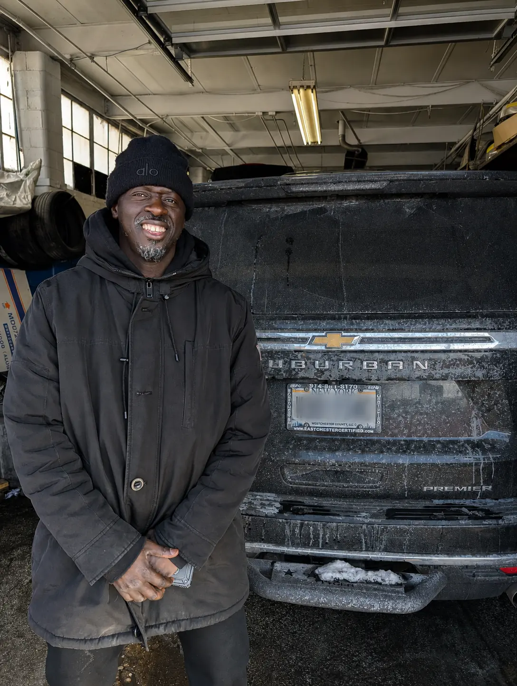
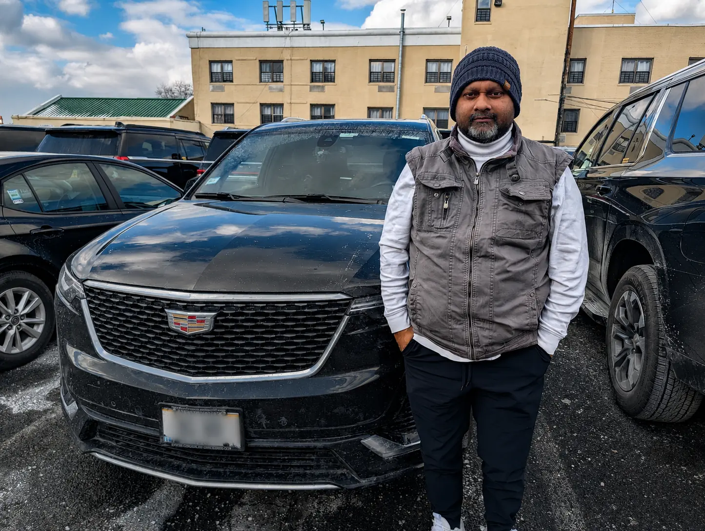
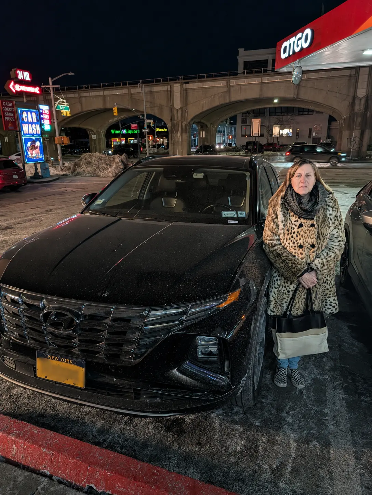
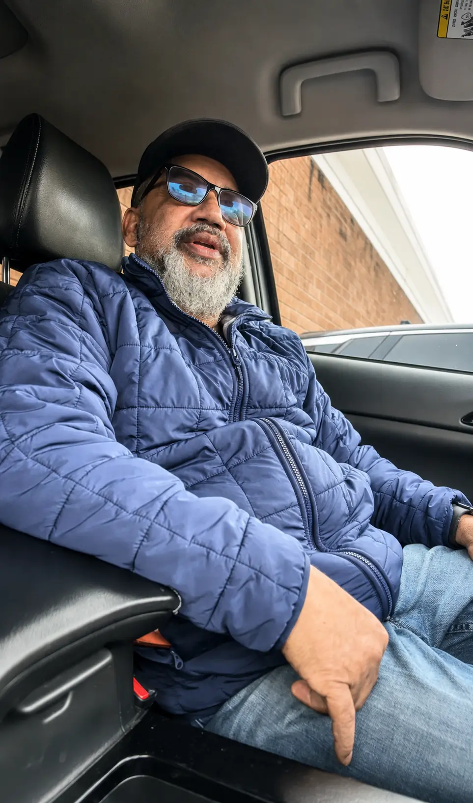
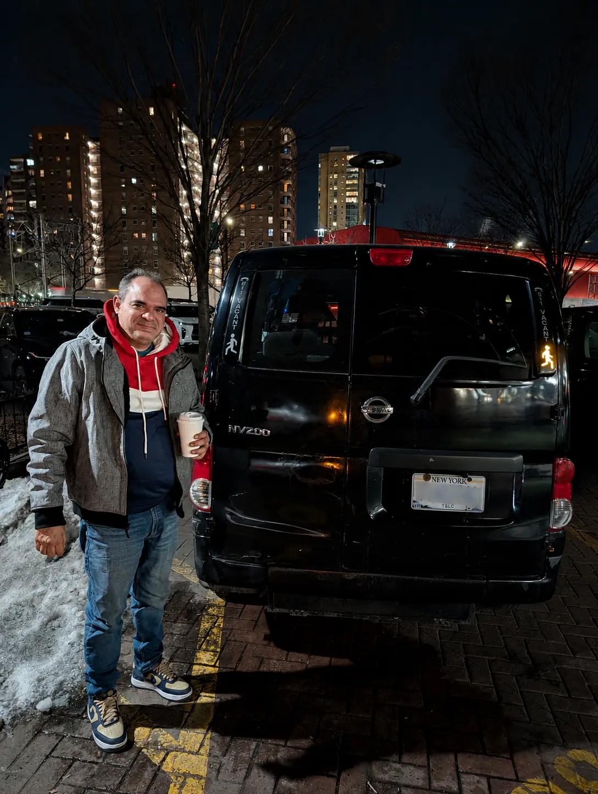
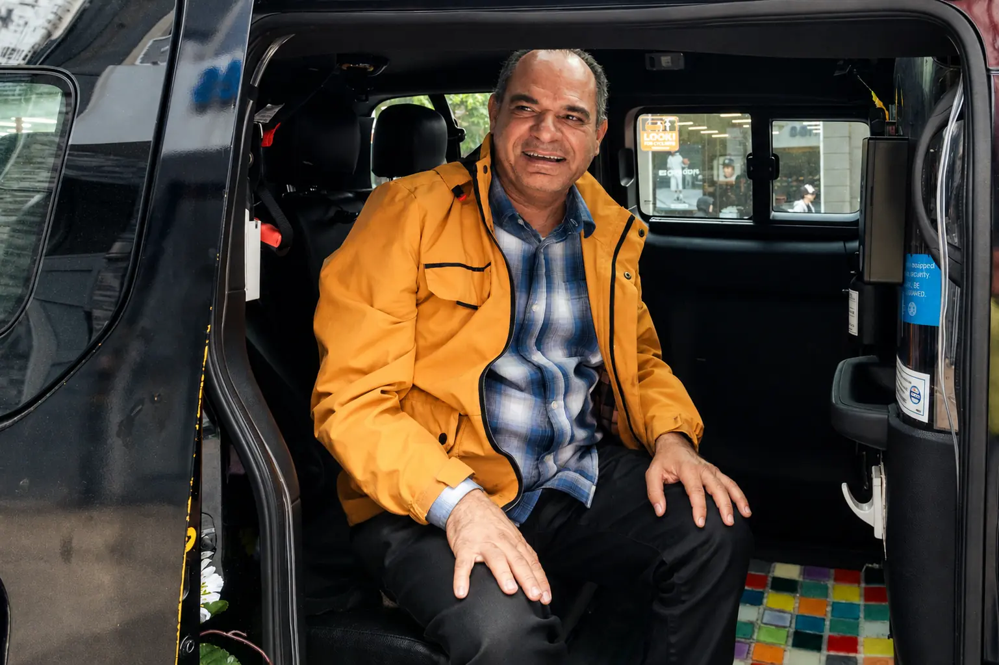
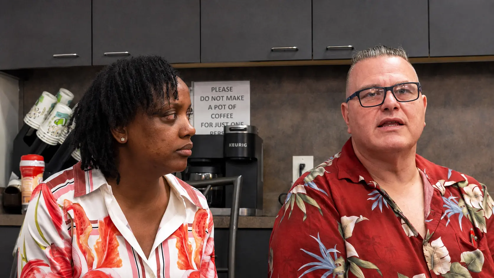
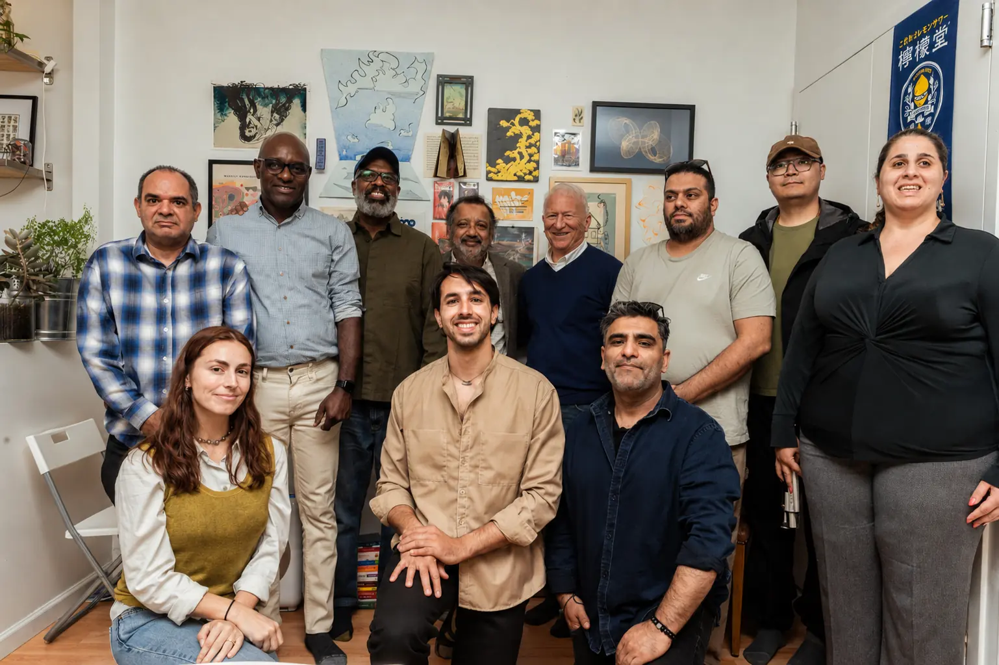

Nearly 100 drivers shaped this report
We went to drivers before settling on a policy framework — not after. Here's how we listened, and what they told us.
Interviews began with the job, not robotaxis. If a driver didn't raise the topic themselves, we asked one scripted question near the end. Participants were not a representative sample of all rideshare and taxi drivers — but their testimony and judgment shaped every question this report asks.
Drivers who shaped this project
The project identifies and photographs drivers only with their permission. These six New York City focus-group participants consented to be named in the report.
What drivers told us
Pay has already fallen
We were making 78 percent. I got $78 on a $100 ride. Now, a $100 ride, I get $64.New York driver, more than a decade of experience
I have bills to pay, rent and stuff. What am I supposed to do when all this happens and I'm not bringing in the income?New York driver
Drivers disagreed about whether robotaxis should operate
I don't like it. Maybe I am old-fashioned.Liakat Ali — on robots taking over people's jobs
The enemy is not the technology. I have an Apple Watch, I have an iPhone, I have an electric car. It's not my enemy.San Francisco driver, part-time
Drivers want to keep working, not be pushed out
Every person should be allowed to drive that autonomous vehicle, and not to be replaced.Asad Iqbal — New York City
You're going to replace me with the car. Let me fix the car.Driver, focus-group participant
Drivers have earned support, and they know it
Some of us don't want free money. Our dignity is being stripped away by them just throwing us away. We just want to know that we're valued.Atlanta driver
They take a commission if there is a worker. But there is no worker in a self-driving car.Car-service driver
Drivers know political action matters, and they need allies
Driverless cars don't vote. Drivers and their families vote.Atlanta driver
We don't have gold. We have each other.Driver, focus-group participant
What the driver survey found
selected driver ownership or a share of autonomous-vehicle revenue as a form of support that would help most.
saw a payment tied to the robotaxi transition as charity or severance — versus 5 who read it as recognition of something earned.
selected job training and help finding new work as most helpful — the least-favored option offered.
The people behind the passenger market
A few more of the drivers, organizers, and community members who gave their time to this research.








Are you a driver with a story to share?
Local campaigns are starting in several cities. If you drive rideshare or taxi and want a voice in how this plays out where you live, we want to hear from you.